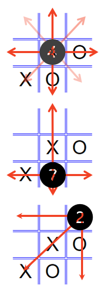

Web programming
A computer program is shaped by its data representation and the statements that determine its flow of control.
See the Pen windowProperties by Ellen Bajcar (@ebajcar) on CodePen.
See the Pen exploreEvents by Ellen Bajcar (@ebajcar) on CodePen.
See the Pen openNewWindow by Ellen Bajcar (@ebajcar) on CodePen.
See the Pen bubble vs. capture by Ellen Bajcar (@ebajcar) on CodePen.
See the Pen timers and loaders by Ellen Bajcar (@ebajcar) on CodePen.

let whatCanThisChoiceBeat = {
rock: [["crushes", "scissors"],
["crushes", "lizard"]],
paper: [["covers", "rock"],
["disproves", "spock"]],
scissors: [["cuts","paper"],
["decapitates", "lizard"]],
lizard: [["poisons", "spock"],
["eats", "paper"]],
spock: [["vaporizes", "rock"],
["smashes", "scissors"]]
}whatCanThisChoiceBeat?
Custom object
Still can be used for determining a winner.
Extends usage to creating user help.
let property;
for ( property in whatCanThisChoiceBeat ) {
console.log(
property + " " +
whatCanThisChoiceBeat[property][0][0] " " +
whatCanThisChoiceBeat[property][0][1] );
console.log( "OR " +
property + " " +
whatCanThisChoiceBeat[property][1][0] + " " +
whatCanThisChoiceBeat[property][1][1] );
}Use for...in loop to traverse objects.
for (variableName in objectOfChoice) {}variableName takes on the next property value on each loop.Note the three dimensions.
let table =
document.getElementsByTagName("main")[0].appendChild(
document.createElement("table"));
let row = table.appendChild(document.createElement("tr"));
row.appendChild(document.createElement("td")).innerText = "➦ beats ➦";
// Object.keys() returns an array of keys (strings)
let choices = Object.keys(whatCanThisChoiceBeat);
let len = choices.length;
for (let i = 0; i < len; i++) {
let currentTD = row.appendChild(document.createElement("td"));
currentTD.innerText = choices[i];
}Create table structure using DOM methods.
document.createElement() is evaluated first.parent.appendChild(newEl) attaches the new element.Use Object.keys() to create an array of properties.
let i = 0;
for ( property in whatCanThisChoiceBeat ) {
let currentTR = table.appendChild(document.createElement("tr"));
let currentTD = currentTR.appendChild(document.createElement("td"));
currentTD.innerText = choices[i];
i++;
for (let j = 0; j < len; j++) {
let currentTD = currentTR.appendChild(document.createElement("td"));
const whichColumn = (el) => el == whatCanThisChoiceBeat[property][0][1];
if ( choices.findIndex(whichColumn) == j)
currentTD.innerText = whatCanThisChoiceBeat[property][0][0];
const whichColumn2 = (el) => el == whatCanThisChoiceBeat[property][1][1];
if ( choices.findIndex(whichColumn2) == j)
currentTD.innerText = whatCanThisChoiceBeat[property][1][0];
}
}Populate table.
whatCanThisChoiceBeat[property][0][1] is the same as indexOf choices, then display whatCanThisChoiceBeat[property][0][0]Arrow function
const whichColumn = (currVal) => currVal == whatCanThisChoiceBeat[property][0][1];Traditional function
function whichColumn(currVal) {
return (currVal == whatCanThisChoiceBeat[property][0][1]);
}